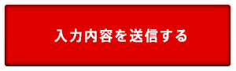
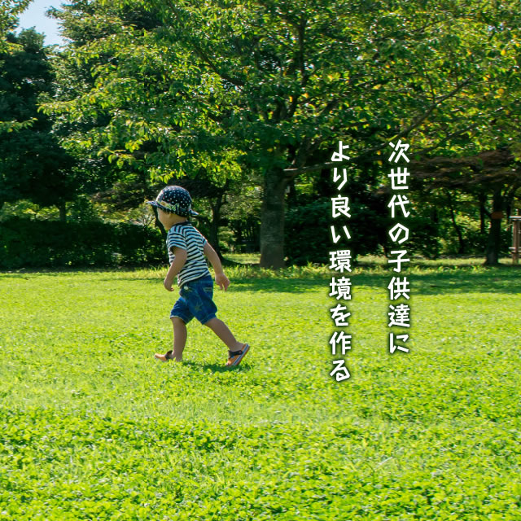

良質な再生土として利用することを目的に
確実な汚泥洗浄ができるKMCの中間処理施設
KMCの中間処理施設は、従来にない乾式分級・選別(手選別)、
湿式分級・選別、湿式洗浄を取り入れた施設です。確実な洗浄能力を持った当施設では、軽量のゴミから大型のがれき・廃プラスチック・木くずなどが入った汚泥であっても土壌環境基準値以下にまで処理し、良質な再生土として利用することを目的としています。

処理工程
千葉県白井市に今まで関東では設置されたことのない廃棄物の処理施設を設けました。低含水率汚泥と高含水率汚泥を分けて受け入れるのは従来と変わりないですが、そのあとの工程が他社では類を見ないものとなっています。
仮イメージ


お気軽に
お問い合わせください。
建設汚泥の運搬・処理にお困りの方はお気軽にご連絡下さい。